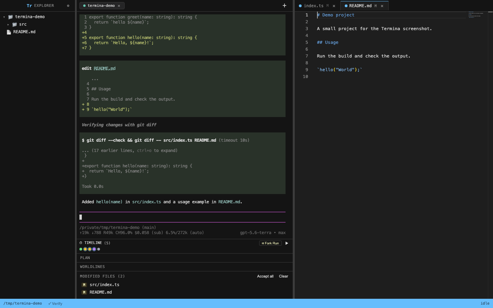
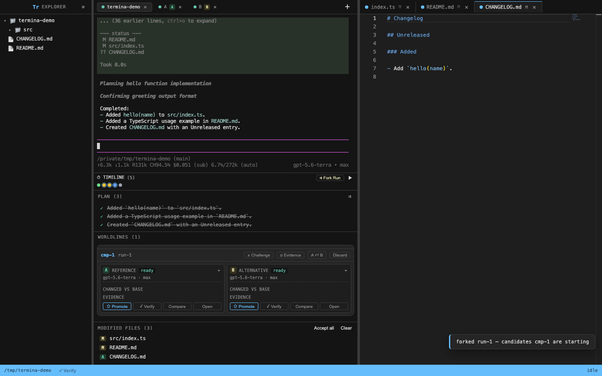

The left side runs Pi — the real interactive terminal TUI with full model providers. The right side is a live Monaco IDE that watches the agent edit files in real time. Fork runs into isolated candidate sandboxes, verify with deterministic evidence, and converge on green code.

Test drive the live synchronization between the Pi PTY terminal and the Monaco editor. Trigger real agent turns below and watch files auto-open mid-run with side-by-side diff review!
Never trust blind code generation. Fork completed runs into isolated candidate sandboxes (Candidate A Reference vs Candidate B Alternative). Compare with measured benchmarks, then 3-way merge the winner back into trunk.

Termina enforces process isolation boundaries. The AI agent cannot corrupt your primary working directory or Git repository.
All Git, tree hashing, snapshot captures, and three-way merges execute inside a native compiled Rust binary. Never invokes slow Git CLI subshells.
Candidate Pi processes, Verify workers, and descendant bash processes run inside operating-system level sandboxes. Escaping writes and network leaks are denied.
Source states are stored in an app-private snapshot repository with read-only Git object alternates. Your personal .git repository stays 100% untouched.
Main-process write leases prevent concurrent writers from changing source trees. Editors are saved before snapshot checkpoints and unowned models are protected.
Candidate workspaces materialize near-instantaneously on APFS volumes without duplicating heavy runtime assets like node_modules on disk.
Three-way merges and promotion operations write an atomic pre-image journal before touching files. Crashes roll back cleanly on next launch.
In Termina, performance is treated as a correctness requirement. Every hot path is profiled and enforced with automated perf baselines.
Signed and notarized for macOS. Ready-to-run standalone binaries for Linux.
One-line installation script (requires Node ≥ 22.19 & npm):
curl -fsSL https://raw.githubusercontent.com/Jesusz0r/termina/master/scripts/install.sh | sh
After launch, run /login in the terminal to configure Gemini, Claude, or OpenAI providers.